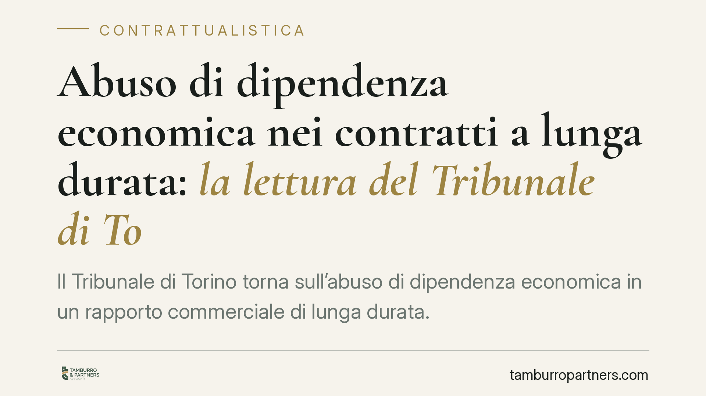

Abuso di dipendenza economica nei contratti a lunga durata: la lettura del Tribunale di Torino
Il Tribunale di Torino torna sull'abuso di dipendenza economica in un rapporto commerciale di lunga durata. La decisione precisa i presupposti della fattispecie e i suoi effetti pratici, offrendo un riferimento utile a chi negozia o gestisce contratti B2B squilibrati sul piano del potere contrattuale tra le parti.

Il caso e perché conta
Nei rapporti commerciali di durata, tra imprese, capita che una parte diventi progressivamente dipendente dall'altra: investimenti dedicati, assenza di alternative di mercato, integrazione operativa. Quando la parte forte sfrutta questo squilibrio per imporre condizioni ingiustificatamente gravose, si entra nel campo dell'abuso di dipendenza economica.
Il Tribunale di Torino, Sez. I civile, con pronuncia del 3 maggio 2024, ha affrontato la questione in un contratto a lunga durata, offrendo indicazioni concrete su presupposti e conseguenze della fattispecie.
Inquadramento normativo
La disciplina è contenuta nell'art. 9 della legge 18 giugno 1998, n. 192 (norme sulla subfornitura). Nonostante la collocazione, la giurisprudenza prevalente ne riconosce una portata generale: l'abuso di dipendenza economica può rilevare in qualunque rapporto tra imprese, non solo nella subfornitura in senso stretto.
La norma definisce la dipendenza economica come la situazione in cui un'impresa è in grado di determinare, nei rapporti commerciali con un'altra, un eccessivo squilibrio di diritti e obblighi. La valutazione tiene conto anche della reale possibilità, per la parte che subisce l'abuso, di reperire sul mercato alternative soddisfacenti.
L'abuso può consistere, tra l'altro, nel rifiuto di vendere o di comprare, nell'imposizione di condizioni contrattuali ingiustificatamente gravose o discriminatorie, nell'interruzione arbitraria delle relazioni commerciali in atto. Il patto attraverso cui si realizza l'abuso è nullo. Restano ferme le tutele risarcitorie e, in presenza dei presupposti, l'intervento dell'Autorità garante della concorrenza.
Cosa ha chiarito il Tribunale
La decisione torinese si muove su due piani.
Sul piano dei presupposti, ribadisce che la dipendenza economica non si presume dalla semplice disparità dimensionale tra le parti. Occorre dimostrare in concreto lo squilibrio dei diritti e degli obblighi e, soprattutto, l'assenza di reali alternative di mercato. Non basta lamentare condizioni sfavorevoli: bisogna provare che quelle condizioni non erano evitabili rivolgendosi ad altri operatori.
Sul piano dell'abuso, la pronuncia distingue tra la fisiologica asimmetria di potere contrattuale, di per sé lecita, e il suo sfruttamento distorto. La forza contrattuale non è vietata; è vietato usarla per estrarre vantaggi ingiustificati o per condizionare la controparte oltre i limiti della buona fede.
Nei contratti a lunga durata questo aspetto è centrale. La stabilità del rapporto crea legittimo affidamento e investimenti specifici. Recessi improvvisi, modifiche unilaterali gravose o l'imposizione tardiva di condizioni deteriori possono integrare l'abuso proprio perché sfruttano la dipendenza maturata nel tempo.
Implicazioni pratiche
Per chi opera come fornitore o distributore in posizione debole, la decisione conferma che la tutela esiste ma richiede un onere probatorio serio. Non è sufficiente il malcontento sulle condizioni economiche: serve documentare lo squilibrio e l'assenza di alternative.
Per chi detiene la posizione forte, il messaggio è opposto ma speculare. La libertà negoziale non è illimitata. Clausole di recesso, revisioni di prezzo, modifiche dell'assetto contrattuale vanno esercitate con misura, tanto più quanto più il rapporto è consolidato e la controparte vi ha fatto affidamento.
Sul piano dei rimedi, va ricordato che la nullità colpisce il patto abusivo, non necessariamente l'intero contratto. Ciò impone attenzione alla redazione: una clausola invalida può lasciare in piedi il rapporto, con effetti non sempre prevedibili.
Cosa fare in concreto
- Mappate la vostra esposizione: individuate i rapporti in cui la vostra impresa dipende da un unico partner o in cui siete voi il partner indispensabile.
- Documentate le alternative di mercato, o la loro assenza: è l'elemento probatorio decisivo in un eventuale contenzioso.
- Rivedete le clausole sensibili su recesso, revisione dei prezzi e modifiche unilaterali, verificandone la proporzionalità.
- Formalizzate le trattative: conservate corrispondenza e proposte, che documentano l'iter negoziale e l'eventuale imposizione di condizioni.
- Valutate un parere preventivo prima di interrompere o modificare rapporti di lunga durata potenzialmente esposti alla contestazione.
Disclaimer
Contributo informativo a cura di Tamburro & Partners - Avv. Giuseppe Tamburro. Non costituisce parere legale.
Ogni contratto ha il suo equilibrio.
Se vuoi una revisione delle clausole o una redazione su misura, scrivi allo studio. Ti rispondiamo entro un giorno lavorativo.